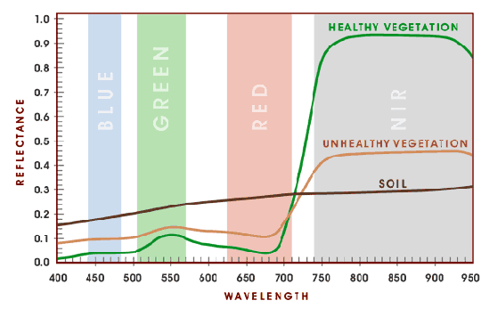

Capítulo 1 Introducción
En el campo de la teledetección ambiental se han desarrollado numerosos cocientes e índices de vegetación relacionados con el vigor y la salud de las plantas (Bannari et al. 1995). Estos indicadores, en conjunto con otras métricas espectrales, han demostrado ser de gran utilidad para una amplia variedad de estudios de ecología y conservación (Wang et al. 2010). Desafortunadamente, las restricciones financieras y tecnológicas para la captura de imágenes obtenidas por medio de sensores a bordo de plataformas aéreas o espaciales han limitado la efectividad de la teledetección en la recolección de datos de la superficie terrestre a escalas de detalle. Como consecuencia, los RPAS se han posicionado como un complemento adecuado para estudios ambientales en áreas de pequeña extensión, permitiendo obtener imágenes a una elevada resolución espacial y temporal a un menor costo (Koh y Wich 2012). Este impulso ha sido especialmente notable con el desarrollo paralelo de sensores multiespectrales adaptados a aeronaves de pequeño tamaño, en conjunto con la aparición de programas informáticos que facilitan el procesamiento fotogramétrico y el análisis de grandes volúmenes de datos.
El presente estudio investiga el uso de RPAS para estudios de vegetación a partir del análisis de imágenes multiespectrales adquiridas durante una campaña de vuelos en la provincia de Loja (Ecuador). Tras comentar brevemente los índices de vegetación empleados, se describe la metodología de campo y el procesamiento posterior de las imágenes. Finalmente se realiza un análisis pormenorizado de los resultados obtenidos y se proponen algunas recomendaciones de cara a futuras campañas de vuelo.
1.1 Índices de vegetación
Los índices de vegetación (IV) son un conjunto de combinaciones algebraicas realizadas a partir de los niveles digitales de dsitintas bandas del espectro electromagnético. Han sido diseñados con objeto de discriminar cubiertas y realzar ciertas propiedades de la vegetación relacionadas con su composición, estructura y estado fisiológico. Estos IV se fundamentan en el particular comportamiento radiométrico de las plantas, dando lugar a una curva espectral típica de la vegetación saludable [ver imagen ??]. Los pigmentos fotosintéticos absorben la mayor parte de la radiación en el visible, dentro del rango de la denominada radiación fotosintéticamente activa (400 -750 µm) o PAR. Por el contrario, las hojas reflejan un gran porcentaje de la radiación correspondiente al infrarrojo cercano (075-1.3 µm), también denominado IRC. A medida que la vegetación enferma la actividad fotosintética disminuye, de la misma forma que el contraste entre ambas bandas del espectro. La caracterización de estas variaciones de contraste constituye el fundamento de la mayoría de los IV.

Por regla general los IV se calculan a partir de superficies de reflectancia, obtenidas previa calibración radiométrica de las imágenes y teniendo en cuenta principalmente las condiciones de iluminación en el momento de la toma, junto con otros factores dependientes de la óptica del sensor. Si bien es posible calcular los IV directamente a partir de los valores brutos de las imágenes, no es posible conceder un valor físico a los resultados (Chuvieco Salinero 2006), por lo que no son aptos para estudios cuantitativos de caracter multitemporal o en los que se pretenda comparar los resultados obtenidos por diferentes sensores.
En este trabajo se calcularon tres índices de vegetación (ver tabla ??): índice de vegetación de diferencia normalizada (NDVI), índice modificado de vegetación ajustada al suelo (MSAVI2) e índice de vegetación de diferencia normalizada verde (GNDVI).
1.1.1 NDVI
El índice más conocido y más ampliamente utilizado para el monitoreo de la vegetación es el NDVI (Rouse et al. 1973), a partir del cual han surgido numerosas variantes. A menudo se relaciona directamente con otros parámetros de la superficie terrestre, incluyendo el porcentaje de cobertura del suelo, la actividad fotosintética de la planta, el contenido de agua, el índice del área foliar y la biomasa (Pettorelli 2013). En otros casos ha sido empleado en estudios que tratan de predecir patrones de biodiversidad a diferentes escalas espaciales (Madonsela et al. 2018; Gillespie 2011; Levin et al. 2007).
1.1.2 MSAVI2
El MSAVI2 (Qi et al. 1994) aborda algunas de las limitaciones del NDVI cuando se aplican en áreas de vegetación dispersa, con una alta superficie de suelo desnudo. A diferencia del índice de vegetación ajustado al suelo original (SAVI), no necesita especificar empíricamente el factor de corrección del brillo del suelo (L) según el grado de cobertura vegetal en el área de estudio.
1.1.3 GNDVI
El GNDVI (Gitelson y Merzlyak 1998) es una versión modificada del NDVI, sustituyendo la banda del rojo por la del verde. Debido a su mayor sensibilidad a variaciones en la concentración de clorofila, ha sido ampliamente utilizado en agricultura de precisión para caracterizar el grado de madurez de los cultivos.